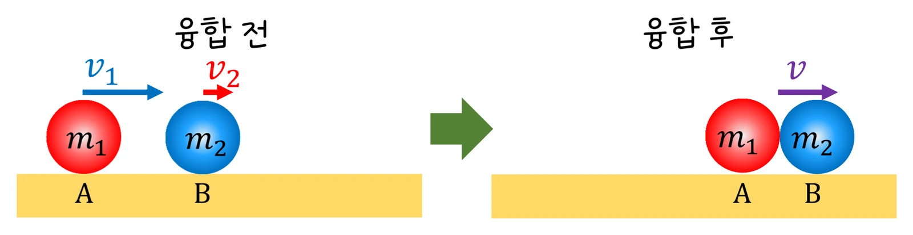
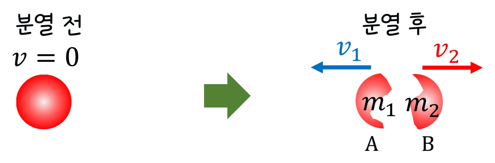

고2 물리학 · Ⅰ 힘과 에너지 · 웹툰 3화 「로켓은 무엇을 밀까」
충돌과 운동량 보존 — 운동량은 언제나, 운동 에너지는 충돌에 따라
실험에서 두 수레의 질량·속도와 범퍼(용수철 e = 1 · 고무 0.5 · 벨크로 0)를 바꿔 가며 충돌 전후 속도를 재고 운동량 합과 운동 에너지 합을 비교했습니다. 운동량 합은 어떤 범퍼든 같았지만 운동 에너지는 벨크로에서 가장 많이 줄었고, A가 받은 충격량과 B가 받은 충격량은 크기가 같았습니다. 운동량 보존과 반발 계수를 정리합니다.
- 웹툰 3화
- 실험: 수레 충돌
- 과학 원리
- 자습 노트
- 06 역학적 에너지와 열
실험에서 얻은 것
실험 데이터 되짚기
에어 트랙(마찰 거의 없음). A 0.3 kg · 0.5 m/s가 정지한 B 0.3 kg에 충돌할 때의 값입니다.
| 범퍼 (e) | v_A′ | v_B′ | 운동량 합 (전 → 후) | 운동 에너지 (전 → 후) | 손실 |
|---|---|---|---|---|---|
| 용수철 (1.0, 탄성) | 0 | +0.5 m/s | 0.15 → 0.15 kg·m/s | 0.0375 → 0.0375 J | 0 (속도 맞바꿈) |
| 고무 (0.5, 비탄성) | +0.125 m/s | +0.375 m/s | 0.15 → 0.15 | 0.0375 → 0.0234 J | 38 % |
| 벨크로 (0, 완전 비탄성) | +0.25 m/s | +0.25 m/s | 0.15 → 0.15 | 0.0375 → 0.0188 J | 50 % (최대) |
| (참고) 용수철, A 0.3 kg → B 0.6 kg | −0.167 m/s (튕김) | +0.333 m/s | 0.15 → 0.15 | 0.0375 → 0.0375 | 0 |
운동량은 어떤 충돌에서든 보존되지만 운동 에너지는 충돌 종류에 따라 다릅니다. A가 받은 충격량의 크기 m_A|v_A′ − v_A|와 B가 받은 충격량 m_B·v_B′는 항상 같습니다 — 작용·반작용. 가벼운 것이 무거운 것에 탄성 충돌하면 튕겨 나옵니다(v_A′ < 0).
개념 정리
1. 충돌에서 운동량은 보존된다
두 수레가 충돌할 때 서로 주고받는 힘은 작용·반작용으로 크기가 같고 방향이 반대이므로, 외부 힘이 없으면 충돌 전후 총 운동량이 같습니다: m_A·v_A + m_B·v_B = m_A·v_A′ + m_B·v_B′. 웹툰 3화: 2 kg 수레 A(3 m/s)가 정지한 1 kg B에 붙으면 (2 + 1) × v = 6 → v = 2 m/s. 운동량은 어떤 충돌에서든 보존되지만 운동 에너지는 충돌 종류에 따라 다릅니다. 반발 계수 e = (멀어지는 속도) ÷ (다가가는 속도): e = 1 탄성 충돌(운동 에너지 보존), 0 < e < 1 비탄성, e = 0 완전 비탄성(붙어서 함께 움직임, 에너지 손실 최대).
교재 그림
충돌하는 동안 두 물체는 같은 크기의 힘을 반대로 주고받는다

충돌하는 짧은 시간 동안 A가 B를 미는 힘과 B가 A를 미는 힘은 크기가 같고 방향이 반대(작용·반작용)이고, 작용하는 시간도 같습니다. 그래서 A가 잃은 운동량 = B가 얻은 운동량 → 두 물체의 운동량 합은 그대로입니다.
2. 충돌 후 속도 구하기, 작용·반작용과 힘의 평형
운동량 보존 + 반발 계수 정의 두 식을 풀면 v_A′ = [m_A·v_A + m_B·v_B − e·m_B(v_A − v_B)] ÷ (m_A + m_B), v_B′도 같은 꼴. 같은 질량·탄성이면 속도를 맞바꾸고, 벨크로(e = 0)면 v′ = m_A·v_A ÷ (m_A + m_B). 가벼운 것이 무거운 것에 탄성 충돌하면 튕겨 나오고 무거운 것이 가벼운 것에 부딪히면 계속 앞으로 갑니다. 작용·반작용은 서로 다른 두 물체에 작용하는 한 쌍(지구가 책을 당김 ↔ 책이 지구를 당김), 힘의 평형은 한 물체에 작용하는 두 힘(책의 중력 ↔ 책상의 수직 항력) — 둘 다 크기가 같고 방향이 반대지만 누구에게 작용하느냐가 다릅니다. 로켓은 가스를 뒤로 밀어낸 반작용으로 진공에서도 가속합니다.
움직여 보기
에어 트랙 충돌 — 범퍼를 바꿔도 운동량 합은 그대로
A 0.3 kg이 0.5 m/s로 정지한 B에 부딪힙니다. 범퍼를 바꾸면 운동 에너지(초록)는 줄어들지만 보라색 운동량 합 0.15 kg·m/s는 언제나 그대로입니다. B를 0.6 kg으로 바꾸고 용수철 범퍼로 부딪혀 보세요 — 가벼운 A가 뒤로 튕겨 나와 A의 막대가 왼쪽(−)으로 갑니다. 마찰 무시, 충돌은 순간으로 그렸습니다.
교재 그림
붙어서 함께 가거나, 갈라져 반대로 가거나 — 운동량 합은 그대로


위: 붙는 충돌(벨크로, e = 0) — m₁v₁ + m₂v₂ = (m₁ + m₂)v. 웹툰 3화의 2 kg·3 m/s 수레가 1 kg에 붙으면 v = 6 ÷ 3 = 2 m/s. 아래: 정지한 물체가 갈라지면 처음 운동량이 0이므로 m₁v₁ = m₂v₂(크기), 두 조각은 반대 방향으로 갑니다 — 가스를 뒤로 내뿜는 로켓이 앞으로 나아가는 원리입니다.
3. 모형과 실제, 생활 속에서
에어 트랙이라 마찰은 거의 없지만 실제로는 공기 저항과 트랙 기울기 때문에 총 운동량이 1~3 % 변하고, 반발 계수도 범퍼 재질·충돌 속력에 따라 조금씩 달라 정확한 상수가 아닙니다. 1차원 정면 충돌만 다뤘고 비스듬한 충돌은 x·y 방향 각각 운동량이 보존됩니다. 자동차 충돌 사고 재구성은 운동량 보존으로 충돌 전 속도를 추정하고 크럼플 존은 비탄성 충돌로 에너지를 흡수해 승객을 보호합니다. 당구·컬링은 탄성에 가까운 충돌, 진흙에 박히는 화살은 완전 비탄성 충돌입니다.
용수철 1.0 · 고무 0.5 · 벨크로 0.0 · 충격량 크기 같음(작용·반작용) · 운동 에너지 보존은 e = 1일 때만
“충돌하는 동안 A와 B는 작용·반작용을 주고받아. 같은 크기의 힘을 같은 시간 동안 반대 방향으로 받으니까, 한쪽이 잃은 운동량만큼 다른 쪽이 얻어. 충돌 전 2 kg × 3 m/s = 6 kg·m/s → 충돌 후 3 kg × v = 6 → v = 2 m/s.”
웹툰 3화 · 제로: “영상으로 잰 값도 2 m/s 근처야. 운동량의 합은 그대로!”
“3라운드! 공기가 전혀 없는 우주에서 로켓 엔진을 켜면, 로켓은 앞으로 나아갈까? 난 나아간다. 로켓은 공기를 미는 게 아니거든.” “둘 다 크기가 같고 방향이 반대인데, 누구에게 작용하느냐가 다르구나.”
웹툰 3화 · 스코어보드 띵! 제로 1 : 2 뭉치 — 작용·반작용 vs 힘의 평형
영상으로 보기
예제
A 0.3 kg(+0.5 m/s)가 정지한 B 0.6 kg에 고무 범퍼(e = 0.5)로 충돌하면?
v_A′ = [0.15 − 0.5 × 0.6 × 0.5] ÷ 0.9 = 0 → A 정지. v_B′ = 0.15 ÷ 0.6 = +0.25 m/s. 검산: e = (0.25 − 0) ÷ 0.5 = 0.5 ✔. 운동 에너지 0.0375 → 0.0188 J.
웹툰 3화에서 정지한 보트(100 kg)에서 제로(50 kg)가 2 m/s로 뛰어내리면 보트는?
처음 운동량 0 → 50 × 2 + 100 × v = 0 → v = −1 m/s(뒤로). 분열도 운동량 보존입니다 — 로켓과 같은 원리.